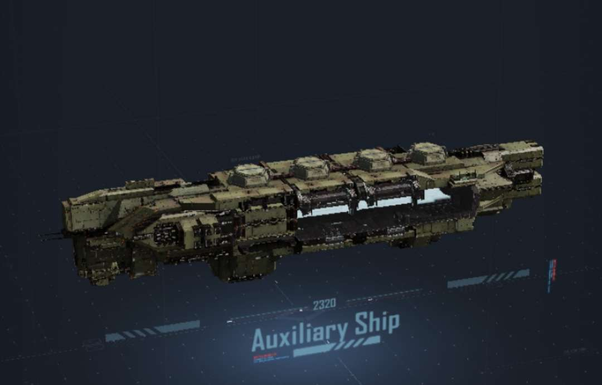
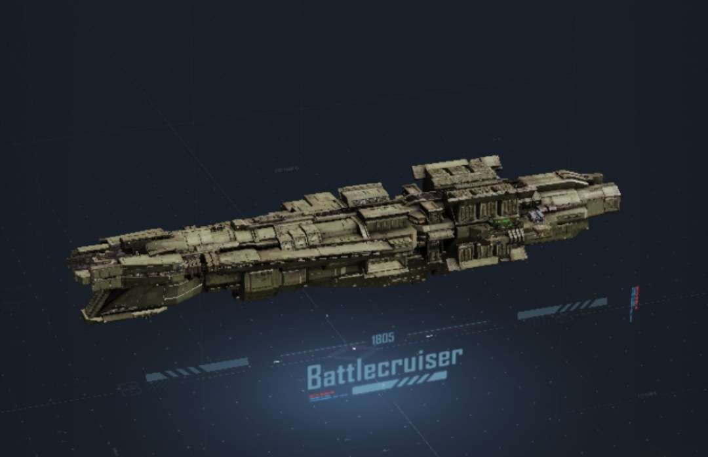
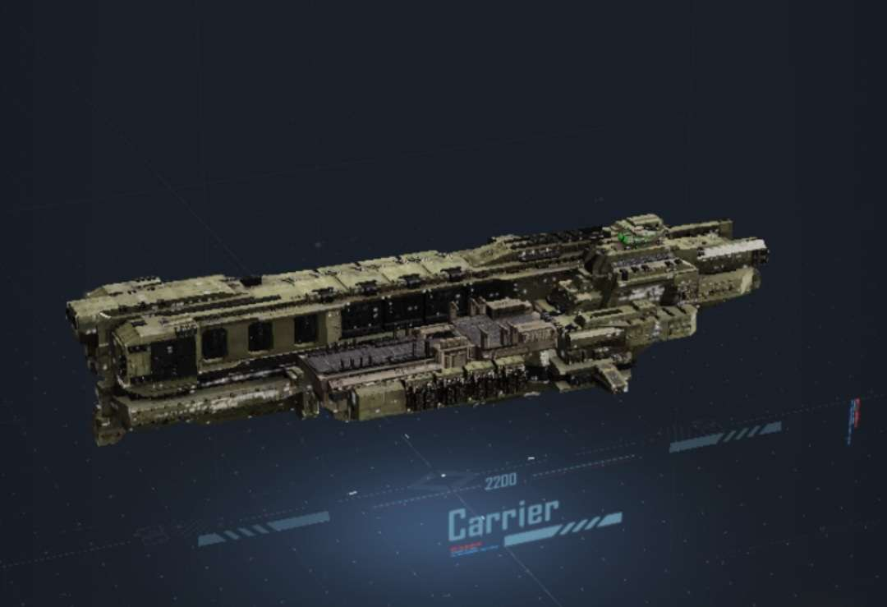

Supercapital Ships List
Auxiliar Ships
| Image | Group | Type | Name | Description | Weapon Type | Damage Type | DPM Ship | DPM Anti Air | DPM Siege | Carrier Capacity | Armor | Hitpoints |
|---|---|---|---|---|---|---|---|---|---|---|---|---|
|  | ||||||||||||
| Fortress Bow Mounted Heavy Cannon System | Dual Cannon Heavy Bow Battery | Fortress MK4-BG-2650 | A customized dual-fire heavy assault cannon with heavy 650mm rounds that deal effective damage to medium and large ships. | Cannon | Kinetic | 8084 | 1231 | |||||
| Anti Ship Turret | BG-1260 | A medium assault turret capable of dealing significant damage to medium and small ships. It also has basic air defense capabilities. | Cannon | Kinetic | 2973 | 394 | 525 | |||||
| Fortress Assault Railgun System | Bow-Mounted Assault Heavy Railgun | Fortress MK4-BR-1850 | This powerful bow-mounted railgun shoots high-velocity ammo that can easily penetrate heavy targets, making it a powerful weapon against large ships. | Railgun | Kinetic | 11200 | 3150 | |||||
| Anti-Aircraft Missile Launcher Array | BM-2x280B | An 80mm small Anti-Aircraft Missile Launcher Array that can be used to quickly launch a counterattack against nearby Aircraft. | Missile | Kinetic | 800 | 320 | ||||||
| Integrated Support Dock | Integrated Supply Facility | CSE-7000 | Equipped with a complete ship maintenance device capable of repairing your ships when docking outside the Base. | Tactical Support | ||||||||
| Frigate Production System | Frigates Independent Production Facility | MF-2500 | Equippet with a small size Frigate production Facility which enables the Auxiliar Ship to produce Friagte Class Ships independently outside the Base | Tactical Support | ||||||||
| Production Line Modification Module | BMP-60 | A production line modification module customized by NOMA Shipping Group for Auxiliar Ships. This Module slightly improves the production efficiency and HP of Self-hold Ships. | Tactical Support | |||||||||
| Corvette Production System | Corvette Independent Production Facility | MC-2500 | Equipped with a small sized Aircraft production Facility which enables the Auxiliar Ship to produce Corvette Class Ships independently outside the Base | Tactical Support | ||||||||
| Production Line Modification Module | BMP-60 | A production line modification module customized by NOMA Shipping Group for Auxiliar Ships. This Module slightly improves the production efficiency and HP of Self-hold Ships. | Tactical Support | |||||||||
| Destroyer Production System | Destroyer Independent Production Facility | MD-2500 | Having a complete production facility helps the Auxiliar Ship to produce Destroyer Class ships outside the Base. | Tactical Support | ||||||||
| Production Line Modification Module | BMP-60 | A production line modification module customized by NOMA Shipping Group for Auxiliar Ships. This Module slightly improves the production efficiency and HP of Self-hold Ships. | Tactical Support | |||||||||
| Aircraft Loading System | Large Fighter Hangar | CFB-200 | An Integrated Aircraft Hangar that can house 2 Squadrons of heavy Fighter craft. It has seperate docking and maintenance space for each squadron. It is equipped with an Aircraft Command and detection System. | Hangar | 2 Squadrons Heavy Fighter | |||||||
| Corvette Dock | Corvette Dock | CBC-2000 | A Hangar that houses 3 corvettes. It is equipped with a corvette maintenance and support System. | Hangar | 3 Corvette Class Ships | |||||||
| Tundra Interceptor UAV System | Area-Denial Anti-Aircraft UAV Pod | CAT/R-6 | Carries 4 Area-Denial Anti-Aircraft UAVs. These UAVs provide tactical Anti-Air Support for allied Ships in the same formation. | Anti-Aircraft UAV | 4608 | 4 Anti-Aircraft UAVs | ||||||
| Hummingbird Firepower Recon UAV System | Firepower Recon UAV Pod | CFT-6 | Carries 4 Firepower Recon UAVs. It is tasked with scanning the enemy formation for weak links and increases the chance of Critical hits. | Recon UAV | 4 Recon UAVs | |||||||
| Colossus Guard UAV System | Guard UAV Plattform | CFV-2 | 4 Large Guard UAVs are Mounted to the outside of the ship. These UAVs are equipped with experimental puls Weapons allowing them to bring as much firepower as a small Frigatte to the Battlefield. | Guard UAVs | Energy | 7340 | 732 | 4 Guard UAVs | ||||
| Heavy Additional Armor System | Heavy Additional Armor | ASX-90 | Adds an external physically reinforced layler to the original Armor to greatly improve the ships ability to resist impact | Reinforced Armor | 80 | 36069 | ||||||
| Nano Automated Maintenance System | Nano Repair System | BST-300 | This Nano Repair System is integrated into the Armor of the ship. In Battle if the Auxiliar Ship is damaged this System will repair the damage to the ship and recovere its Hitpoints. | Self Repair Module | ||||||||
| Armor System | Generic Super Heavy Armor | AC-100 | Standard heavy Armor for Super Capital Ships. It provides protection against medium Weapon attacks. | Armor | ||||||||
| Propulsion System | Generic Vector Engine and Warp Drive | EN-600 and EC-600 | The Heavy Engine is used for sailing and addjusting the ships possition in combat. The Warp Drive enables the Ship to enter warp for fast travel in formation | Engine |
Battlecruiser
| Image | Group | Type | Name | Description | Weapon Type | Damage Type | DPM Ship | DPM Anti Air | DPM Siege | Carrier Capacity | Armor | Hitpoints |
|---|---|---|---|---|---|---|---|---|---|---|---|---|
|  | ||||||||||||
| Bow Railgun System | Bow-Mounted Siege Railgun | BR-1950C"RUBY" | A powerfull assault railgun fittet for the bow of the Ship. It has great ammo Capacity and acceleration. It is the Weapon of Choice against ultra Large Targets | Railgun | Kinetic | 12950 | 11310 | |||||
| Ion Turret System | Dual-Fire Heavy Ion Turret | BI-850 | Its Unique dual ion cannon design is capable of firing two ion beams simultaneously, making it highly effective against all Capital Ships. | Ion Turret | Energy | 12857 | 1800 | |||||
| Fortress Cannon System "A" | Heavy Cannon | BG-1850 | An 850 mm heavy anti ship assault cannon that is effective against all types of heavy targets. | Cannon | Kinetic | 9400 | 2755 | |||||
| Anti-Ship Cannon | BG-2240 | A medium assault cannon capable of dealing significant damage to medium ships | Cannon | Kinetic | 3600 | 420 | 320 | |||||
| Anti Aircraft Cannon | BG-340B | A 40 mm small Anti-Aircraft cannon that is able to lock onto and attack enemy aircraft in the surrounding area | Cannon | Kinetic | 120 | 215 | ||||||
| Fortress Battery System "B" | Heavy Cannon | BG-1950 | A 950 mm heavy anti ship assault cannon that is effective against all heavy targets | Cannon | Kinetic | 15866 | 2880 | |||||
| Anti Aircraft Cannon | BG-340B | A 40 mm small Anti-Aircraft cannon that is able to lock onto and attack enemy aircraft in the surrounding area | Cannon | Kinetic | 120 | 215 | ||||||
| Fortress Battery System "C" | Anti-Ship Cannon | BG-2350 | A medium assault cannon capable of dealing significant damage to medium ships. | Cannon | Kinetic | 17100 | 810 | 1800 | ||||
| Anti Aircraft Cannon | BG-340B | A 40 mm small Anti-Aircraft cannon that is able to lock onto and attack enemy aircraft in the surrounding area | Cannon | Kinetic | 120 | 215 | ||||||
| Minecart Projectile Launching Array | Generic Missile Launcher Array | BM-12x250 | A multi purpouse vertical missile launcher array capable of firing small interceptor missiles. It is effective against aircraft, missiles and Corvettes. | Missile | Kinetic | 5940 | 680 | 259 | ||||
| Corvette Dock | Corvette-Mounting Dock | CBC-2300 | A corvette-mounting system that can attack up to 3 corvettes outside the ship | Hangar | 3 Corvette Class Ships | |||||||
| Integrated Damage Controll System | Engineering UAV Maintenance Pod | CRT-3 | Carries 2 Squadrons of standard repair UAVs. These UAVs can repair friendly ships in battle. | Repair UAVs | 2 Squadrons of Repair UAVs | |||||||
| Distributed Weapon Control System | Distributed Fire Control Radar | XI-1200 | Installed on multiple areas on the hull, providing the fire control calibration for all weapons on the ship increasing the Hitrate of the weapons. | Fire Control System | ||||||||
| Additional Armor System | Energized Nano Armor | ASX-150 | Adds an internal nano-reinforced layer to the original armor to greatly improve the ships structural integrety. | Additional Armor | 32484 | |||||||
| Anti-Missile System | Area Anti-Missile Cannon | BG-625C | A small modified near-defense cannon capable of making rapid-fire attacks on enemy aircraft in your formation and intercepting missiles. | Cannon | Kinetic | 324 | ||||||
| Armor System | Heavy Composite Armor | ASX-150 | Heavy armor with an additional energy absorbtion and dissipative interlayer added to the original heavy armor. | Armor | 240 | 180470 | ||||||
| Propulsion System | Generic Vector Engine and Generic Warp Drive | EN-600 and EC-600 | The Heavy Engine is used for sailing and addjusting the ships possition in combat. The Warp Drive enables the Ship to enter warp for fast travel in formation | Engine |
Carrier
| Image | Group | Type | Name | Description | Weapon Type | Damage Type | DPM Ship | DPM Anti Air | DPM Siege | Carrier Capacity | Armor | Hitpoints |
|---|---|---|---|---|---|---|---|---|---|---|---|---|
|  | ||||||||||||
| Corvette Dock | Corvette Dock | CBC-3200 | A hangar that houses 6 corvettes. | Hangar | 6 Corvett Class Ships | |||||||
| Large Aircraft Hangar | Large Aircraft Hangar | CFB-1200 | An integrated Aircraft hangar that can house 8 Heavy Fighter craft Squadrons | Hangar | 8 Heavy Fighter Squadrons | |||||||
| Integrated Armory | Dodeca-Fire Anti Ship Missile System | MK3-BM-8x320 "Lightning Field" | A generic vertical anti-ship missile launcher array that is able to rapidly fire medium anti-ship missiles. | Missile | Kinetic | 4688 | 589 | 294 | ||||
| Dual Cannon Heavy Battery | BG-2450A | A 450 mm dual-fire heavy anti-ship assault cannon that is effective against all types of heavy targets. | Cannon | Kinetic | 4960 | 665 | ||||||
| Projectile Weapon Plattform | Anti-Ship Missile Array | MK5-BM-16x180 "Lightning Field | A generic heavy anti-ship missile array. Thanks to its large ammo capacity and rapid reload mechanism it can mount attacks consecutively and offeres high sustained damage. | Missile | Kinetic | 4061 | 354 | |||||
| Dodeca-Fire Anti Ship Missile System | MK3-BM-8x320 "Lightning Field" | A generic vertical anti-ship missile launcher array that is able to rapidly fire medium anti-ship missiles. | Missile | Kinetic | 4688 | 589 | 294 | |||||
| Integrated Cannon Plattform | Anti Ship Cannon | BG-2180 | A light assault cannon capable of dealing significant damage to small ships. | Cannon | Kinetic | 4200 | 431 | 336 | ||||
| Dodeca-Fire Anti Ship Missile System | MK3-BM-8x320 "Lightning Field" | A generic vertical anti-ship missile launcher array that is able to rapidly fire medium anti-ship missiles. | Missile | Kinetic | 4688 | 589 | 294 | |||||
| Ship Maintenance System | Large Docking Jetty | BSY-5000 | Carries a great number of repair UAVs capable of repairing your aircraft in battle. | Repair Station | ||||||||
| Corvette Loading Dock | Corvette Dock | CBC-2000 | A Hangar that houses 3 corvettes. | Hangar | 3 Corvette Class Ships | |||||||
| Aircraft Hangar | Aircraft Hangar | CFB-600 | An integrated Aircraft Hangar that can house 5 Heavy fighter craft Squadrons. | Hangar | 5 Heavy Fighter Squadrons | |||||||
| Siege UAV System | Siege UAV Pod | CST-6 | Carries 4 squadrons of standard siege UAVs. | Siege UAVs | 6048 | |||||||
| Anti-Aircraft Missile Array | Missile Defence System | BM-12x180T | An integrated anti-aircraft and anti-missile defence system capable of intercepting enemy missile and aircraft targeting ships in the same row. | Missile | Kinetic | 2618 | 1178 | |||||
| Armor System | Generic Super Heavy Armor | AC-100 | Standard heavy armor for super capital ships. It provides protection against medium Weapons. | Armor | 120 | 329430 | ||||||
| Propulsion System | Generic Vector Engine and Generic Warp Drive | EN-600 and EC-600 | The Heavy Engine is used for sailing and addjusting the ships possition in combat. The Warp Drive enables the Ship to enter warp for fast travel in formation | Engine |